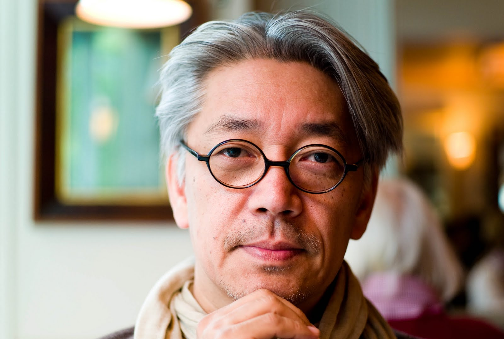

Ryuichi Sakamoto
Ryuichi Sakamoto (坂本 龍一 Sakamoto Ryūichi, born January 17, 1952) (Japanese pronunciation: [sakamoto ɾʲɯːitɕi]) is a Japanese composer, singer, songwriter, record producer, activist, and actor who has pursued a diverse range of styles as a solo artist and as a member of Yellow Magic Orchestra (YMO). With his bandmates Haruomi Hosono and Yukihiro Takahashi, Sakamoto influenced and pioneered a number of electronic music genres.
Sakamoto began his career while at university in the 1970s as a session musician, producer, and arranger. His first major success came in 1978 as co-founder of YMO. He concurrently pursued a solo career, releasing the experimental electronic fusion album Thousand Knives in 1978. Two years later, he released the album B-2 Unit. It included the track "Riot in Lagos", which was significant in the development of electro and hip hop music. He went on to produce more solo records, and collaborate with many international artists, David Sylvian, Carsten Nicolai, Youssou N'Dour, and Fennesz among them. Sakamoto composed music for the opening ceremony of the 1992 Barcelona Olympics, and his composition "Energy Flow" (1999) was the first instrumental number-one single in Japan's Oricon charts history.